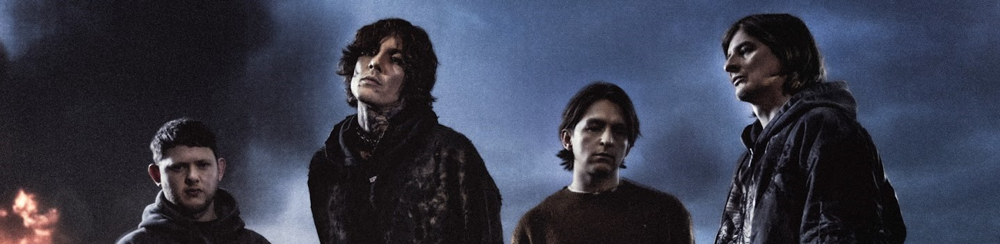
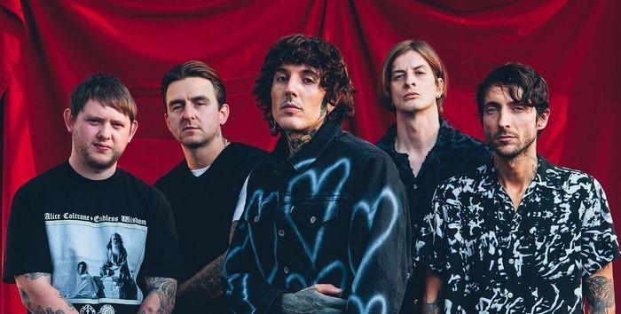
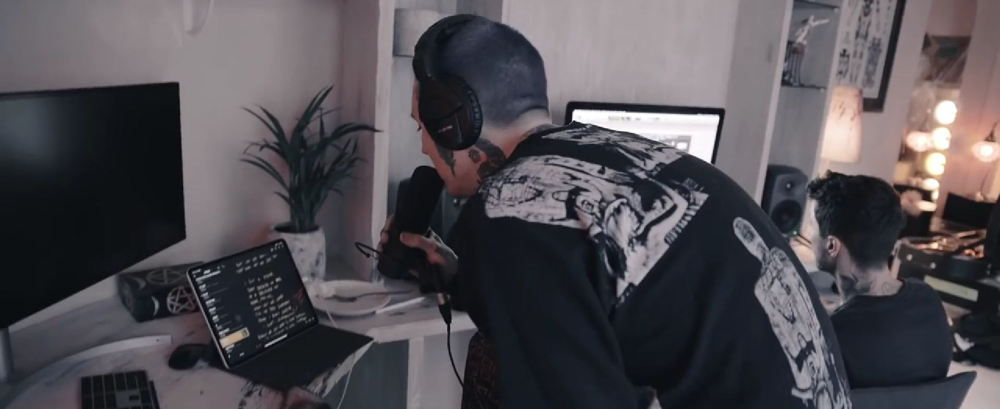
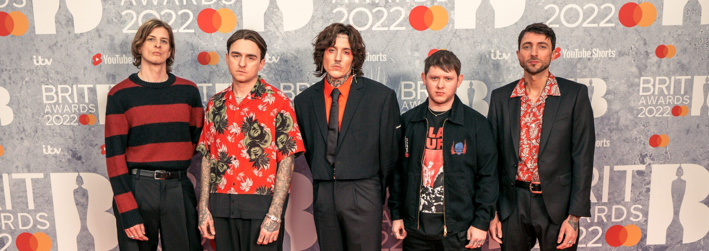

Profil

Bring Me the Horizon (BMTH) adalah grup musik rock Inggris yang dibentuk di Sheffield pada tahun 2004. Saat ini grup ini digawangi vokalis Oliver Sykes, gitaris Lee Malia, bassis Matt Kean, dan drummer Matt Nicholls. Saat ini
mereka berada di bawah kontrak dengan RCA Records secara global dan Columbia Records secara eksklusif di Amerika Serikat.
Grup musik ini merilis album debutnya, Count Your Blessings, pada tahun 2006. Album ini justru mendapat kritikan pedas setelah dirilis. Dengan demikian mereka memutuskan undur diri dari gaya bermusik kontroversial mereka dengan
keluarnya album Suicide Season (2008), yang menjadi titik balik kreativitas grup musik itu. Darinya mereka mendapat kritikan dan nilai komersial lebih baik. Album ketiga mereka, There Is a Hell Believe Me I've Seen It. There Is
a Heaven Let's Keep It a Secret., dirilis tahun 2010, telah membawa mereka ke kancah musik internasional, dan menggabungkan pengaruh dari musik klasik, electronica, dan pop.
Karya-karya BMtH yang pertama, termasuk pada album debutnya, Count Your Blessings, merupakan lagu-lagu deathcore, tetapi mereka mulai mengadopsi gaya metalcore yang lebih eklektik di album-album berikutnya. Kemudian, That's the
Spirit menandai pergeseran gaya bermusik mereka ke rock yang kurang agresif. Pada album Amo, gaya bermusik mereka berubah menjadi electronica, pop, dan hip hop.
Sejarah

Bring Me the Horizon (BMTH) terbentuk pada tahun 2004 di Sheffield, Inggris. Band ini diawali oleh Oliver Sykes (vokal), Lee Malia (gitar), Matt Kean (bass), Matt Nicholls (drum), dan mantan gitaris rhythm Curtis Ward. Nama
"Bring Me the Horizon" diambil dari dialog dalam film Pirates of the Caribbean, dan mencerminkan keinginan mereka untuk mengeksplorasi hal-hal baru dalam dunia musik.
Namun, seiring waktu, BMTH bereksperimen dengan berbagai genre dan mengubah gaya musiknya secara signifikan. Album kedua mereka, Suicide Season (2008), mulai memperlihatkan elemen metalcore yang lebih matang, sementara There Is
a Hell, Believe Me I've Seen It. There Is a Heaven, Let's Keep It a Secret. (2010) memperkenalkan unsur-unsur elektronik dan orkestrasi yang lebih luas.
Puncak perubahan gaya BMTH datang dengan album Sempiternal (2013), yang diterima dengan sangat baik oleh kritikus dan penggemar. Pada titik ini, mereka mulai meninggalkan deathcore, mengadopsi rock alternatif dan post-hardcore
dengan tambahan synth yang kuat. Jordan Fish (keyboard dan backing vocal) yang bergabung pada 2012, memainkan peran kunci dalam arah musik mereka yang baru.
Selain prestasi musik mereka, BMTH juga terkenal dengan penampilan live yang energik dan sering kali dramatis. Mereka telah tampil di festival besar seperti Reading & Leeds, Download Festival, dan telah melakukan tur dunia yang
sukses.
Sejak berdirinya, BMTH telah merilis sejumlah album yang mempengaruhi banyak band dan penggemar di seluruh dunia. Perjalanan karier mereka mencerminkan keberanian untuk berinovasi dan menembus batasan-batasan genre musik. Hingga
saat ini, Bring Me the Horizon tetap menjadi salah satu band yang paling disegani di industri musik alternatif dan metal modern.
Proses penciptaan dan perekaman lagu

Dalam seluruh catatan album grup musik BMtH, semua lirik lagunya diciptakan oleh Oliver Sykes sedangkan lima anggota lainnya—sebagai satu band—dikredit sebagai penulis musik. Kecuali Count Your Blessings, grup ini selalu menulis
di lokasi terpencil untuk menghindari gangguan.[144] Lirik Oliver Sykes memiliki perasaan katarsis yang kuat baginya. Ia banyak memanfaatkan pengalaman pribadinya serta menggambarkan konser sebagai terapi baginya.[143] Pada
tahun 2006, ketika ditanya tentang lirik Count Your Blessings, kala mereka dikritik karena tema liriknya hanya patah hati dan tema-tema lain yang "dangkal dan tidak ada maknanya", ia pun menjawab, "Hidupku tidak akan pernah
seburuk itu dan aku pun tak memiliki apa pun untuk dibicarakan."
Anggota grup musik telah menjelaskan bagaimana album debut ditulis di jantung kota Birmingham dan terus ditekan untuk menciptakan dan merekam lagu sesuai tenggat waktu yang diberikan.[11] Akibatnya, band ini tidak terkesan
dengan produk akhir. Namun, untuk proses penulisan Suicide Season, grup ini mengakui bahwa mereka lebih suka memilih wilayah yang jarang ada kontak manusia untuk fokus pada musik; mereka menulis album kedua mereka di pedesaan
Swedia.[118] Selama penulisan Suicide Season, mantan gitaris II dan pendiri band Curtis Ward hanya menulis dua riff saja untuk bagiannya, dan lebih mengandalkan Lee Malia untuk menulis hampir semua bagian gitar dari album.
Lee Malia menyatakan bahwa proses penciptaan lagu yang khas BMtH melibatkan Oliver Sykes untuk struktur utama lagu, kemudian diikuti oleh Malia sebagai penulis riff. Keduanya berkolaborasi satu sama lain untuk menyusun bagian
mereka dan kemudian memasukkan anggota lainnya untuk menulis sisa lagu.[144] Dinamika penulisan Sempiternal, biasanya menyertakan Sykes, Malia, dan anggota baru Jordan Fish. Malia merasa bahwa dengan adanya pengaruh Fish pada
rekaman, dia didorong untuk membuat riff gitar yang lebih inspiratif.[butuh rujukan] Saat mereka beristirahat sebelum menulis album keempat mereka, mereka merasa kurang membutuhkan isolasi diri.
Diskografi
- Count Your Blessings (2006)
- Suicide Season (2008)
- There Is a Hell Believe Me I've Seen It. There Is a Heaven Let's Keep It a Secret. (2010)
- Sempiternal (2013)
- That's the Spirit (2015)
- Amo (2019)
- POST HUMAN: SURVIVAL HORROR (2020)
Penghargaan

Bring Me the Horizon (BMTH) telah menerima berbagai penghargaan dari berbagai organisasi bergengsi dalam industri musik. Penghargaan ini mencakup pengakuan atas kontribusi mereka di berbagai genre seperti rock dan metal, serta
inovasi dalam pembuatan musik. Berikut adalah beberapa penghargaan yang telah mereka terima dari acara seperti Kerrang! Awards dan Alternative Press:
| Tahun |
Nama Penghargaan |
Kategori |
Nomine / karya |
| 2006 |
Kerrang! Awards |
Best British Newcomer |
Bring Me the Horizon |
| 2011 |
Kerrang! Awards |
Best Album |
There Is a Hell Believe Me I've Seen It. There Is a Heaven Let's Keep It a Secret. |
| 2012 |
Kerrang! Awards |
Best Video |
"Alligator Blood" |
| 2013 |
Kerrang! Awards |
Best British Band |
Bring Me the Horizon |
| 2014 |
Kerrang! Awards |
Best Live Band |
Bring Me the Horizon |
| 2014 |
Alternative Press |
Album Terbaik |
Sempiternal |
| 2014 |
Alternative Press |
Band Internasional Terbaik |
Bring Me the Horizon |
| 2015 |
Kerrang! Awards |
Best British Band |
Bring Me the Horizon |
| 2015 |
Alternative Press |
Video Musik Terbaik |
"Drown" |
| 2019 |
Kerrang! Awards |
Best British Band |
Bring Me the Horizon |